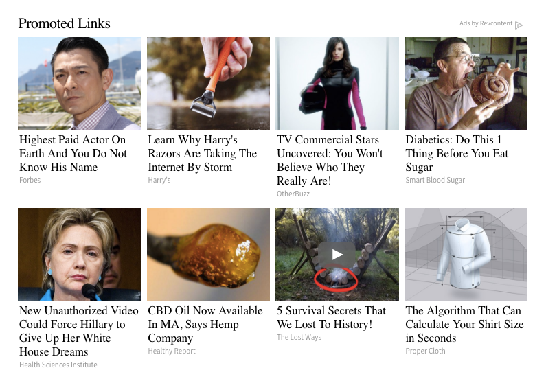

This is the text you'll see when you hover over the important span in a given article.
This is the text you'll see when you hover over the important span in a given article.
BREAKING NEWS: TRUMP DEPORTS IVANKA'S ABORTION PHYSICIAN - WHO WAS VISITED THREE TIMES OVER THE COURSE OF A YEAR
🕙 Published: June 35th, 2018 -- 3:33 AM FST

In the spring of 2017, only 4 months after being sworn into office, Trump approved of his wife Melania’s abortion. After raising five other children Trump and Melania agreed to have a secret abortion in an abortion clinic called Early Options in downtown New York to protect his new and fragile presidency. This is the exact opposite of what Trump campaigned for, and flies in the face of his supposed 'values'!
On April 12, 2017 the abortion was done by a Hispanic doctor named, Dr. Leike Buhm who also worked part time at a CNN news outlet. After performing the procedure President Trump had Dr. Buhm deported for illegally immigrating to America which cause Dr. Buhm to inform the press of the private procedure. Within 2 days of performing the abortion, Buhm had been deported -- going from a U.S. citizen to a deportee less than 48 hours from a time in which Buhm had no idea that they would be leaving the country. No warning whatsoever!
According to the Business Insider, “Trump has expressed a strong opposition to abortion, except in cases of rape, incest, and when the mother's health is endangered.” But in this situation none of these exceptions applied, and Melania still recieved the abortion. What were they thinking? This is outrageous in the context of Trump's campaign. Conservative values seem to have been thrown out the window, gone!

Investigators are still finding evidence pointing Trump having agreed to the abortion. An eyewitness account stated that they had seen Trumps wife entering the clinic wearing a trench coat, sunglasses, and a large hat. Also while looking back at previous records between 2:00 to 7:00 P.M. on April 12, no one exactly knows where Melania Trump was during this time. President Trump refuses to answer any questions of Melania's whereabouts that day. All members of the Trump family refused to comment, but one of our insiders at the WhietHuose said that Trump left to take Melania somwewhere that day! Wow!
